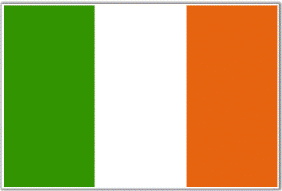

ABOUT IRELAND
Ireland is an island nation located to the north-west of continental Europe. To the east of Ireland, lies the island of Great Britain, from which it is separated by the Irish Sea. On the west of Ireland is the northern Atlantic Ocean; while the Celtic Sea borders the island on the west.
Ireland and Great Britain, along-with the nearby islands, are collectively known as the British Isles. Covering a total area of 32,595.1 square miles, Ireland is the twentieth-largest island on the earth and the third-largest in Europe. It has a coastline of 1,738 miles. The island is home to approximately 6,197,100 people. Ireland is sub-divided into four provinces: Connacht, Leinster, Munster, and Ulster. During the thirteenth and the seventeenth centuries, Ireland was divided into thirty-two traditional counties. Twenty-six of the counties lie in the Republic of Ireland and six counties are in Northern Ireland.
 The national flag of Ireland is a tricolour of green, white and orange. This flag, which bears the colours green for Roman Catholics, orange for Protestants, and white for the desired peace between them, dates to mid-19th century. After its use in the 1916 Rising it became widely accepted by nationalists as the national flag, and was used officially by the Irish Republic(1919–21) and the Irish Free State (1922–37).
In 1937 when the Constitution of Ireland was introduced, the tricolour was formally confirmed as the national flag: "The national flag is the tricolour of green, white and orange." While the tricolour today is the official flag of Ireland, it is not an official flag in Northern Ireland although it is sometimes used unofficially.
The only official flag representing Northern Ireland is the Union Flag of the United Kingdom of Great Britain and Northern Ireland. The Ulster Banner is sometimes used unofficially as a de facto regional flag for Northern Ireland. Since Partition, there has been no universally-accepted flag to represent the entire island. As a provisional solution for certain sports fixtures, the Flag of the Four Provinces enjoys a certain amount of general acceptance and popularity.